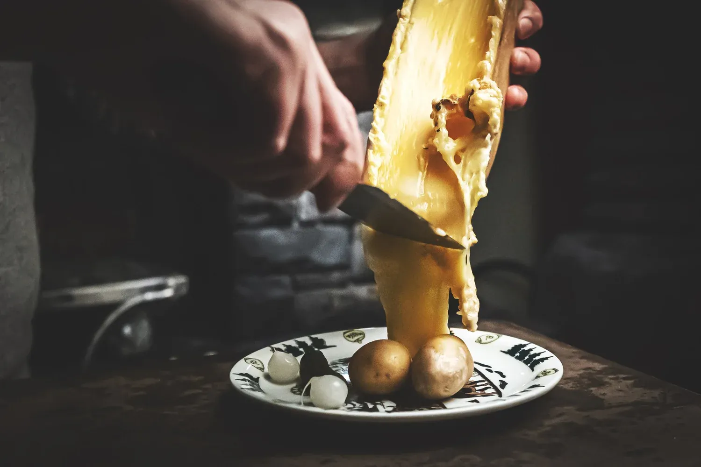
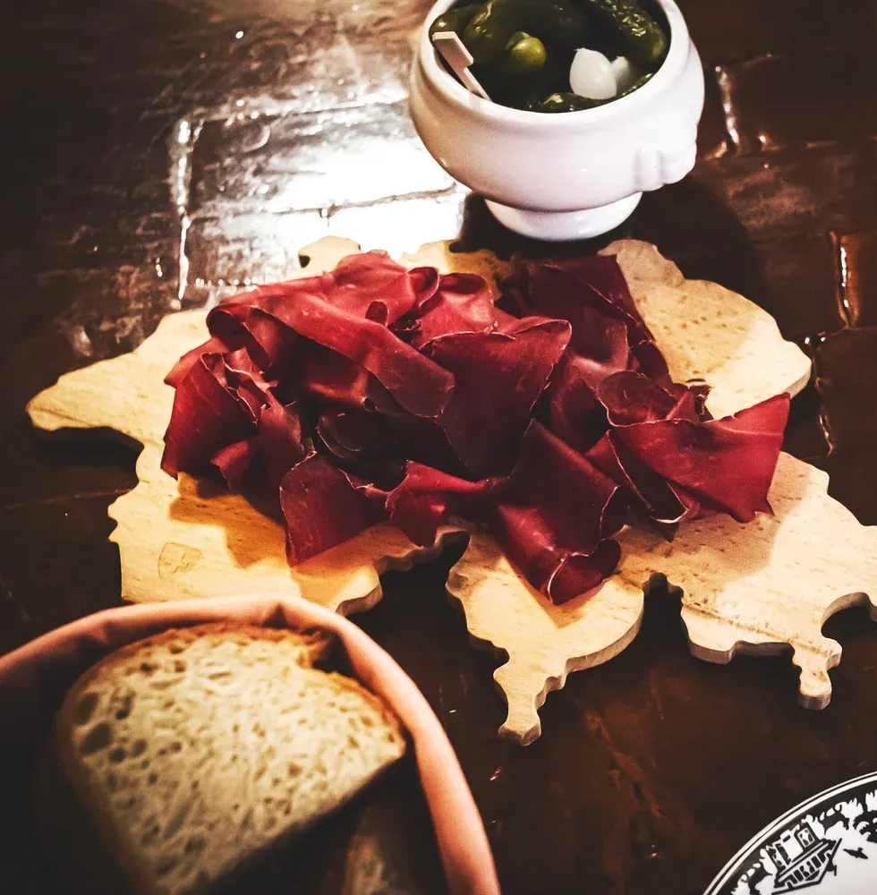
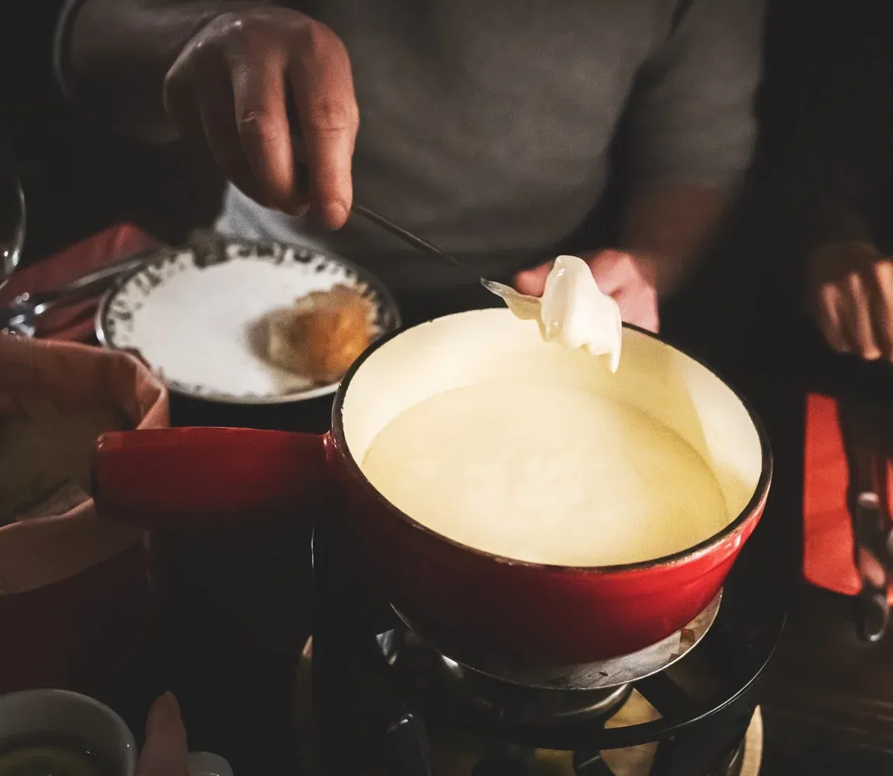
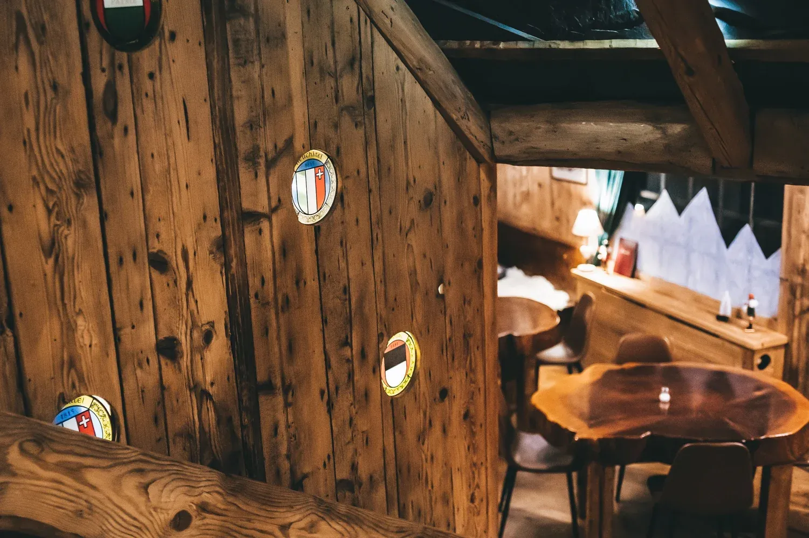
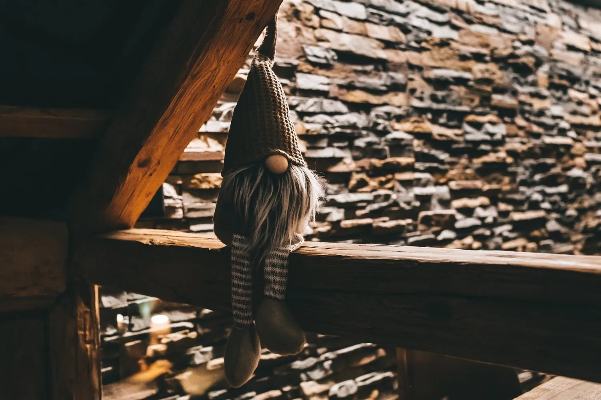
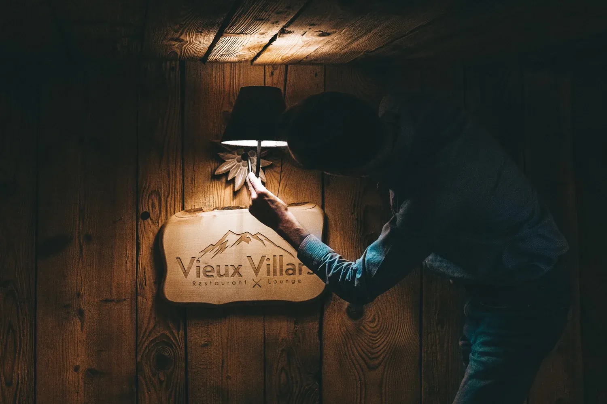
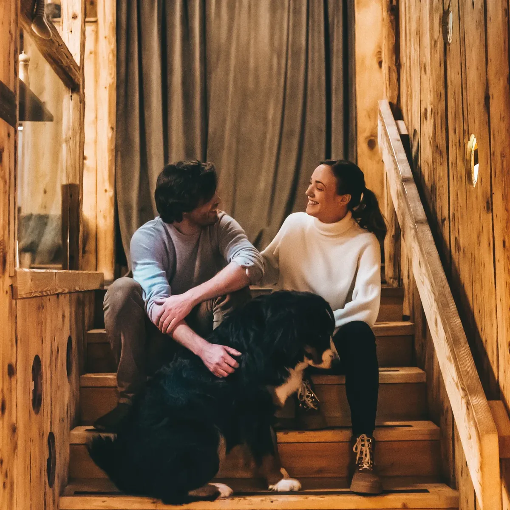
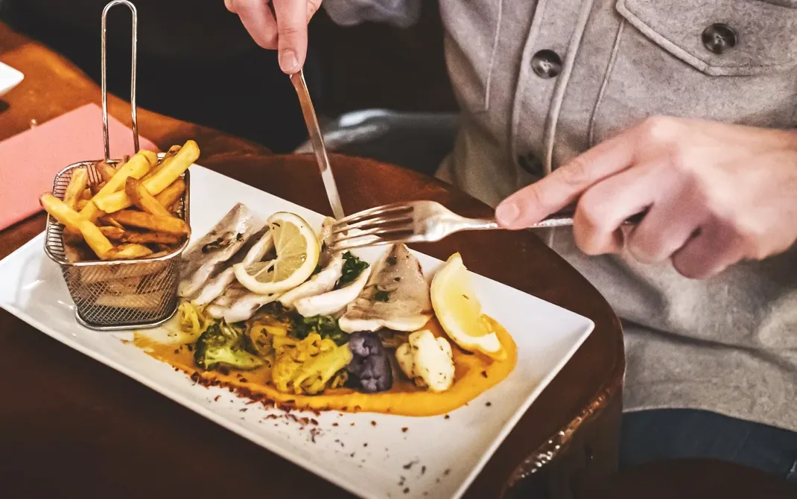
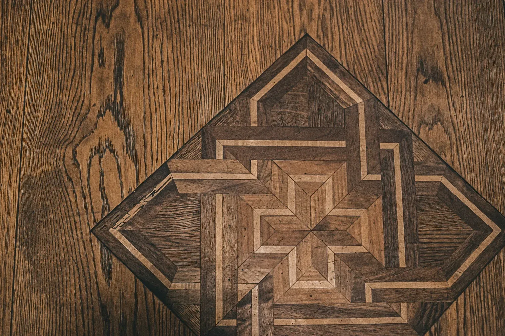

Villars-sur-Ollon · Route des Hôtels 16
Vieux Villars
Spécialités suisses et classiques revisités, avec une raclette au feu de bois servie au carnotzet, à côté de la cheminée.
Ouvert tous les soirs, sauf le mardi
La spécialité de la maison
La raclette au feu de bois
Une demi-meule de Combe 23, placée devant la cheminée pour qu'elle révèle sa pâte crémeuse. Le racleur vous sert, assiette après assiette.
Ce fromage est produit depuis 75 ans par une famille obwaldienne. Son séjour en grotte humide lui a valu un prix de meilleure raclette suisse. Recommandée par le Gault&Millau, la raclette se sert exclusivement dans le carnotzet.
- RéservationSur réservation, dès deux personnes. Précisez-le en réservant.
- OùAu carnotzet, à côté de la cheminée.
- Bon à savoirLe fromage est pasteurisé, une précision utile aux femmes enceintes.


Plat phare des Alpes
La fondue moitié-moitié
Vacherin fribourgeois et gruyère, un mélange secrètement préparé par Eric, le laitier du village. Elle se décline pour varier les plaisirs.
- Moitié-moitié
- Aux bolets
- À la tomate
- Aux piments
- Chèvre-brebis, coup de cœur
Un restaurant typique et familial
Trois étages, trois ambiances
En réservant, dites-nous l'ambiance que vous souhaitez : on vous installe à l'étage qui vous ressemble.

1er étageCalme et moderne

À l'étageAnimé

CarnotzetTypique, à côté de la cheminée

La maison
Une équipe soudée et indépendante.
Le Vieux Villars, c'est un patron, Jonny, sa compagne Chloé et Oka, leur bouvier bernois, entourés de leurs fidèles collaborateurs.
- Jonny & ChloéLa maison
- OkaBouvier bernois
- Elena & AlexandreEn salle
- AdrienEn cuisine
À la carte aussi


Adresse
Route des Hôtels 16
1884 Villars-sur-Ollon
Horaires
Tous les soirsFermé le mardi
Téléphone
+41 24 495 25 25Plus de 6 personnes sans disponibilité en ligne : écrivez-nous sur WhatsApp.